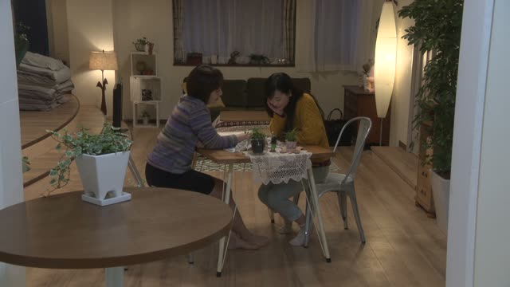
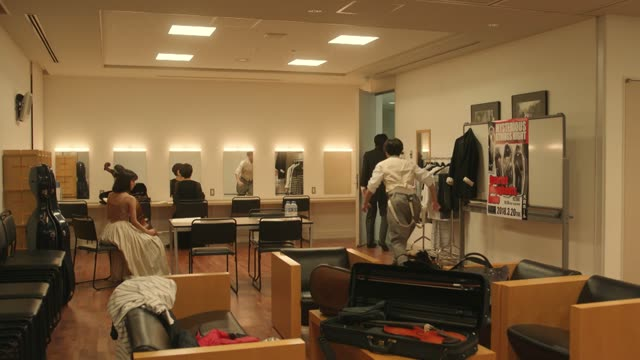
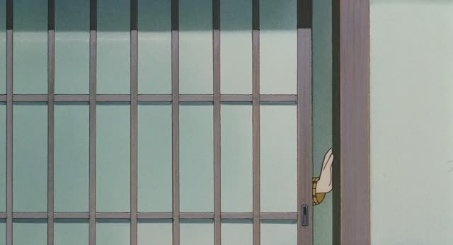
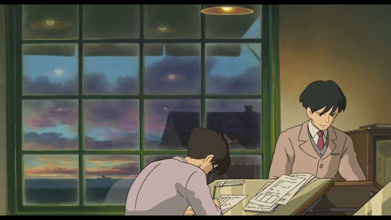

も
Good Morning Call · Episode 17
私も一緒に住んでますけど
"I live with them too, though."
も means "too, also". It goes right after a noun, in the spot where は, が or を would be: 私 + も.
On this card, 私も = "me too": she lives with them too. 住んでます is the polite verb ending.
も takes the place of は, が and を, so never はも or がも. With に or で it goes after them:
- 箱根にも行きました。 "I went to Hakone too."
- 家でも勉強します。 "I study at home too."

Shirokuma Cafe · Episode 8
春野菜も いいよね
"Spring vegetables are nice too, right?"
On this card, they're talking about food they like, and spring vegetables get added to the list: 春野菜も, "spring vegetables too".
Quick Examples
After a long hike, your friend says they're exhausted.
私も疲れた。
"I'm tired too."
CasualAt a bakery, you've picked a melon bun and point at one more.
これもください。
"This one too, please."
PoliteIt rained all day. You check the forecast.
明日も雨だ。
"Tomorrow's rain too."
CasualWith and without
私は行きます。
"I'm going." Just about you.
私も行きます。
"I'm going too." Someone else is already going.
Examples from Media

YouTube · video
薪ストーブもあります。
"There's also a wood stove."
A house tour: one more thing on the list of what's there. も sits where が would be.

Shirokuma Cafe · Episode 3
涙目にもなりますよ
"Anyone would tear up."
With に, も goes after it: に + も. It doesn't replace に.

Teasing Master Takagi-san · Episode 3
今日も１日さんざん高木さんにからかわれたな〜
"Today again, Takagi-san teased me all day."
今日も: today too, just like every other day. Time words with も often mean "again".

Good Morning Call · Episode 11
私も好き。
"I like it too."

Quartet · Episode 10
僕も行く。
"I'll go too."
Kotaro Lives Alone · Episode 9
俺も俺も。
"Me too, me too!"

Only Yesterday
私も行く！
"I'm going too!"

The Wind Rises
僕も帰るよ。
"I'm heading home too."
Further Reading
A Dictionary of Basic Japanese Grammar
Entry "mo¹" (also) · pp. 247–250
Tae Kim's Guide to Japanese Grammar
Introduction to Particles · The 「も」 inclusive topic particle